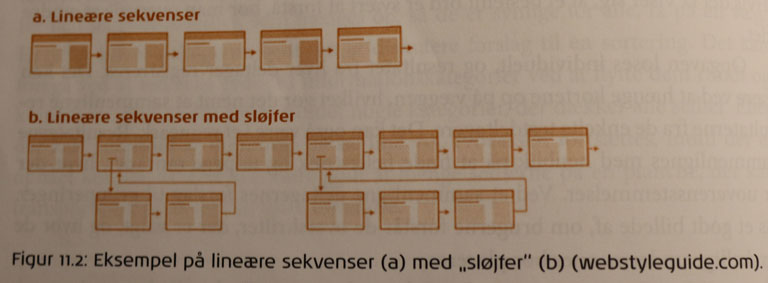
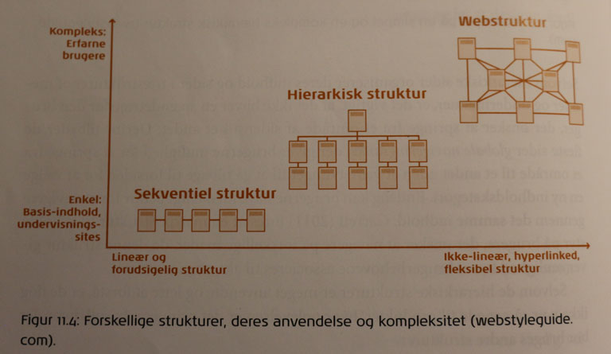
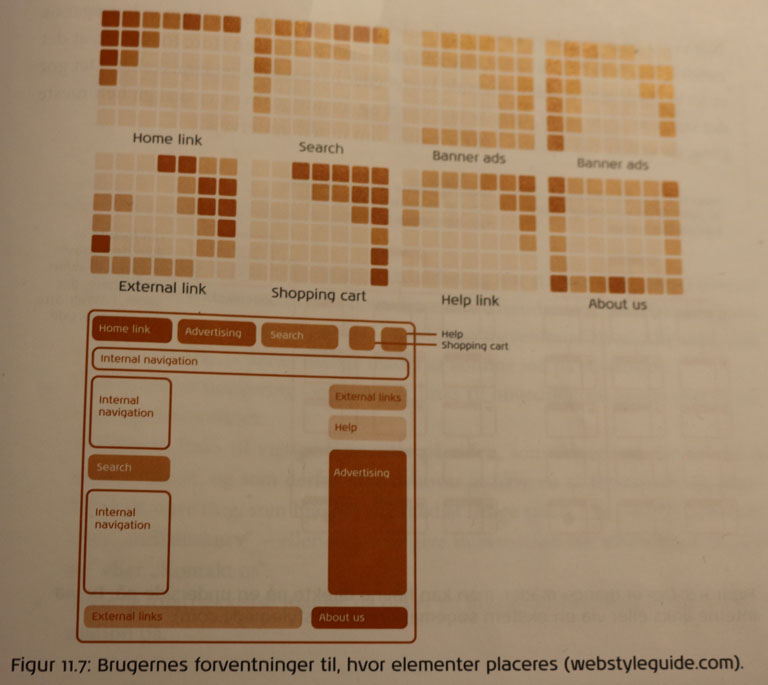

Læringsportfolio
Grundlæggende strukturer:
Den enkleste og mest velkendte. Kendt fra bøger, magasiner og andet trykt materiale. Læser en side af gangen før man går videre til den næste. Anvendes ofte til undervisningssider, bookingsider eller køb. Brugeren begrænses til et klik for at komme videre. Let at forstå og designe.
Mest anvendte på websites. Kræver analytisk tilgang da de kun fungerer på baggrund af velorganiseret materiale.
Den enkleste hierarkiske struktur har form som en stjerne. Hierarkiet udgøres af et enkelt lag og navigering består af simpel liste over undersider og link til forside.
Fleste websider er bygget op af et hierarkisk lag der breder sig ud som grene på et træ (træstruktur). De fleste sider tilbyder globale links så man kan springe frem og tilbage imellem siderne./p>
Disse strukturer er meget anvendte og lette at forstå, men de egner sig dog ikke til produkter hvor oplevelsen er det primære, f.eks. spil.
Denne struktur minder om et spindelvæv. Den har kun få begrænsninger i bevægelsesmønstret. Brugeren kan følge sine egne indfald og udforske sitet og nettet i sit eget unikke mønster. Dette kan dog ende med at blive for forvirrende for brugeren.
I praksis kombinerer man disse tre stukturer. Hierarkisk udformede sider udgør grundstrukturen, den sekventielle bruges ved køb på siden og webstrukturen giver brugeren mulighed for at hoppe rundt i informationsarkitekturen.
Når man er ved at fastlægge informationsarkitekturen er det en god ide at få styr på det overordnede design før man går i gang med detaljer. Det kan være godt at supplere arkitekturen med skitser af navigering og indholdselementer vha. wireframes. Disse kan bruges til at få skabt et fundament for det visuelle design hvor man bevarer fokus på informationsarkitekturen og det strukturelle design. Man skal passe på ikke at falde i designfælden og begynde at tænke farver og grafik da man så kan ødelægge de strukturelle overvejelser. Det er også en god ide at holde sig til de gængse konventioner for navigering, da brugeren nemt kan blive forvirret hvis det ikke er hvor han forventer det.
Handler om hvordan man kommer fra ét sted til et andet og hvor man er. Navigeringsdesign fokuserer på:
Global navigering eller persistent navigering, bruges til at beskrive de navigeringselementer der skal være på hver side. Når navigeringen er konsistent får brugeren fornemmelsen af at være på samme website og de behøver kun finde ud af én gang hvordan man finder rundt.